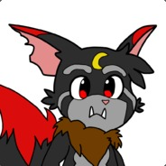

A propos du créateur

On me surnomme Grisouille, je suis actuellement en formation chez POPSchool à l'heure où je code ce site.
Ce projet personnel a débuté le 22 Février 2017 et sera amélioré tout au long de ma montée en compétences.
A propos de ce site
Ce site va vous présenter le monde de la lune, ses personnages, son univers et ses histoires.
Vous pourrez vous plonger dans cet univers riche rempli d'aventures, de mystères et de maléfices.